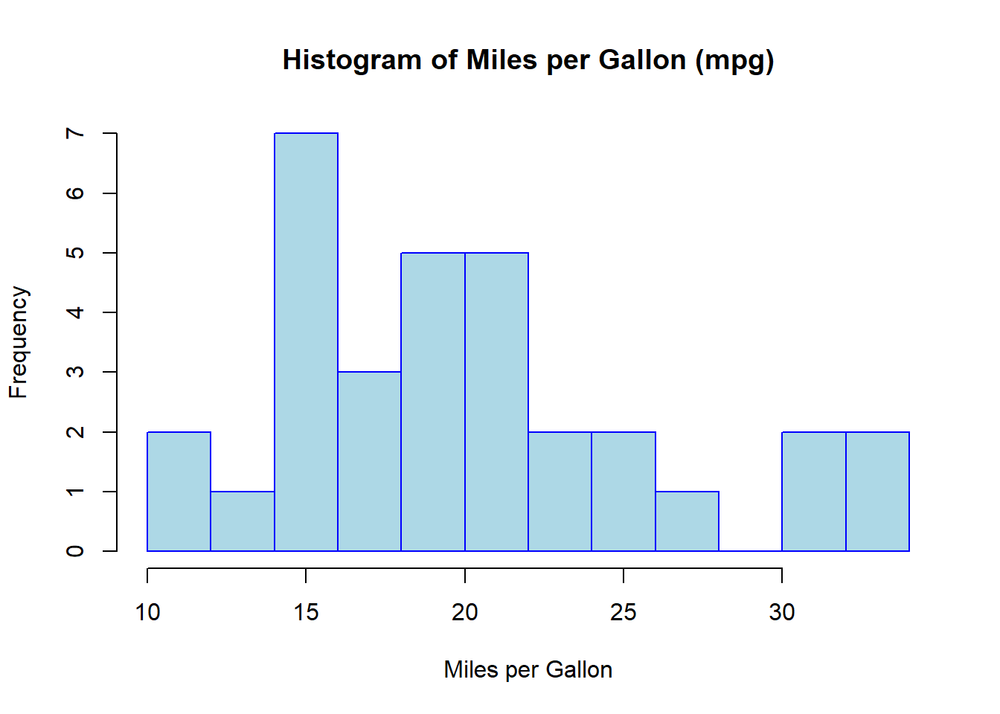
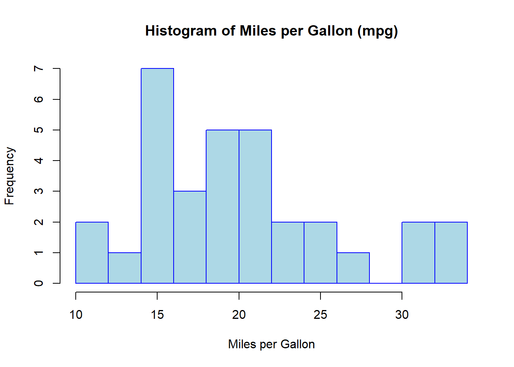

# Base R - Histogram of mpg in mtcars
hist(mtcars$mpg,
col = "lightblue",
main = "Histogram of Miles per Gallon (mpg)",
xlab = "Miles per Gallon",
ylab = "Frequency",
border = "blue",
breaks = 10)
Be sure you customize the chart with your own style/theme (e.g. font, color, pch, etc.)
a. Histogram
b. Barchart
i. Vertical
ii. Horizonal
c. Piechart
d. Boxplot
e. Scatterplot
# Base R - Histogram of mpg in mtcars
hist(mtcars$mpg,
col = "lightblue",
main = "Histogram of Miles per Gallon (mpg)",
xlab = "Miles per Gallon",
ylab = "Frequency",
border = "blue",
breaks = 10)
# Base R - Vertical Barplot of Cylinders
barplot(table(mtcars$cyl),
col = "orange",
main = "Barplot of Cylinders (Vertical)",
xlab = "Cylinders",
ylab = "Count",
border = "red")# Base R - Horizontal Barplot of Cylinders
barplot(table(mtcars$cyl),
col = "lightgreen",
horiz = TRUE,
main = "Barplot of Cylinders (Horizontal)",
xlab = "Count",
ylab = "Cylinders",
border = "green")# Base R - Pie Chart of Cylinders
cyl_table <- table(mtcars$cyl)
pie(cyl_table,
col = c("red", "blue", "green"),
main = "Pie Chart of Cylinder Counts")# Base R - Boxplot of mpg by cylinders
boxplot(mpg ~ cyl,
data = mtcars,
col = "pink",
main = "Boxplot of MPG by Cylinders",
xlab = "Cylinders",
ylab = "Miles per Gallon",
border = "darkred")
# Base R - Scatterplot of mpg vs hp
plot(mtcars$mpg, mtcars$hp,
col = "purple",
main = "Scatterplot of MPG vs Horsepower",
xlab = "Miles per Gallon",
ylab = "Horsepower",
pch = 16)library(ggplot2)
# ggplot2 - Histogram of mpg in mtcars
ggplot(mtcars, aes(x = mpg)) +
geom_histogram(fill = "lightblue", color = "blue", bins = 10) +
ggtitle("Histogram of Miles per Gallon (mpg)") +
xlab("Miles per Gallon") +
ylab("Frequency") +
theme_minimal()# ggplot2 - Vertical Barplot of Cylinders
ggplot(mtcars, aes(x = factor(cyl))) +
geom_bar(fill = "orange", color = "red") +
ggtitle("Barplot of Cylinders (Vertical)") +
xlab("Cylinders") +
ylab("Count") +
theme_minimal()# ggplot2 - Horizontal Barplot of Cylinders
ggplot(mtcars, aes(x = factor(cyl))) +
geom_bar(fill = "lightgreen", color = "green") +
coord_flip() +
ggtitle("Barplot of Cylinders (Horizontal)") +
xlab("Count") +
ylab("Cylinders") +
theme_minimal()# ggplot2 - Pie Chart of Cylinders
ggplot(mtcars, aes(x = "", fill = factor(cyl))) +
geom_bar(width = 1) +
coord_polar(theta = "y") +
ggtitle("Pie Chart of Cylinder Counts") +
theme_void() +
scale_fill_manual(values = c("red", "blue", "green"))
# ggplot2 - Boxplot of mpg by cylinders
ggplot(mtcars, aes(x = factor(cyl), y = mpg, fill = factor(cyl))) +
geom_boxplot() +
ggtitle("Boxplot of MPG by Cylinders") +
xlab("Cylinders") +
ylab("Miles per Gallon") +
theme_minimal() +
scale_fill_manual(values = c("pink", "yellow", "lightblue"))# ggplot2 - Scatterplot of mpg vs hp
ggplot(mtcars, aes(x = mpg, y = hp)) +
geom_point(color = "purple", size = 3) +
ggtitle("Scatterplot of MPG vs Horsepower") +
xlab("Miles per Gallon") +
ylab("Horsepower") +
theme_minimal()Base R functions provide a simple way to create plots but offer limited styling options.
ggplot2 provides greater flexibility and customization options, allowing for more refined visualizations
a. .pdf
b. .jpg
c. .svg
d. .tiff
e. .bmp
{kind=link}
{kind=link}
{kind=link}
Comment
TIFF image format is not compressed and has most of the details
JPG image format is the most compressed but quality still good
PDF is the smallest file and quality is good to print and share